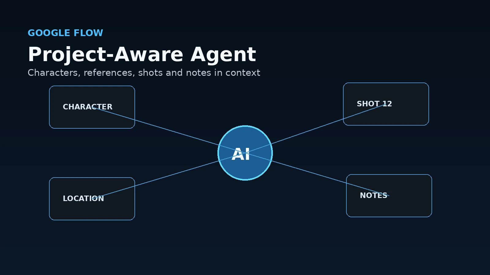
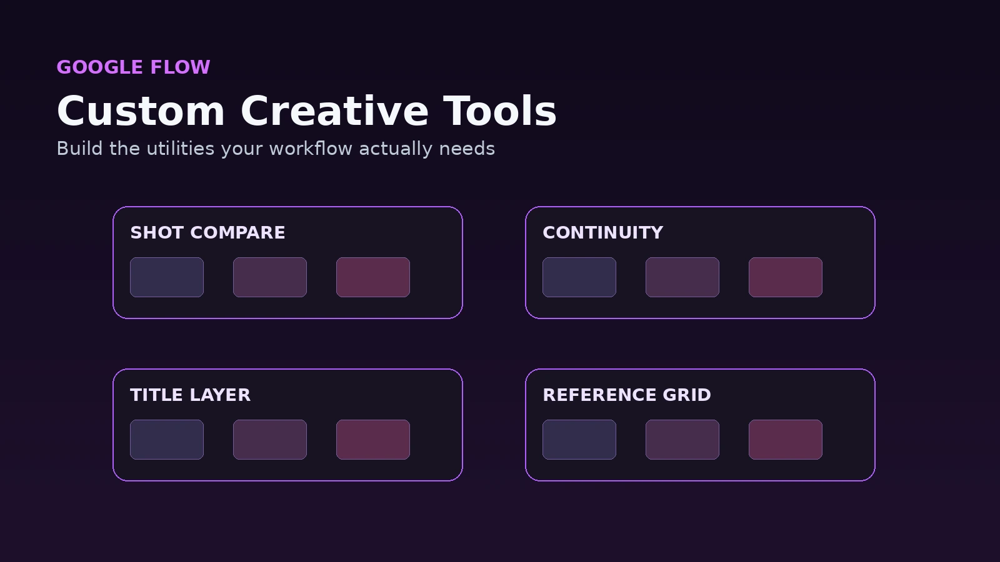

AI video tools have spent the last couple of years competing over one question:
Who can generate the best clip?
Google Flow is starting to ask a different question.
What if the clip generator is only one part of the creative workspace?
Google has been steadily expanding Flow from an AI filmmaking interface into what it now describes as an AI creative studio.
At Google I/O 2026, that direction became much clearer.
Flow gained a project-aware creative agent, Gemini Omni integration and something particularly interesting called Flow Tools: the ability to build custom creative tools inside Flow using natural-language instructions.
That starts sounding less like “type prompt, receive video.”
It starts sounding like software for building your own production process.
The biggest change is the creative agent
Google says Flow's agent can reason across a project and assist during brainstorming, creation and editing.
That distinction matters.
A normal chatbot may know what you just typed.
A project-aware assistant has the potential to understand what you have been building.
For an AI video project, useful context might include:
- Characters - Reference images - Locations - Previous shots - Visual style - Story direction - Existing assets - Failed attempts - Editing decisions
That opens the door to much better creative assistance.
Instead of asking an AI:
“Give me a prompt for a woman entering a greenhouse.”
you could eventually ask:
“Create the next shot using the same woman, wardrobe and greenhouse from the previous scene, but move the camera lower and make this moment feel more uneasy.”
The difference is context.
Consistency in AI filmmaking has always been partly a generation problem and partly an organization problem.
Flow is attacking both.

Gemini Omni brings different media into one workflow
Google is also bringing Gemini Omni into Flow.
The broader goal is allowing creators to work across text, images, video and real-world reference material more fluidly.
Google says creators can blend source material with generated content and iterate conversationally.
That is important because serious visual work rarely starts from one prompt.
You may begin with:
- A photograph - A rough render - A character sheet - A location reference - A storyboard - A previous generated frame - A video clip - A design sketch
The more an AI system understands those things together, the less time you spend translating visual information back into paragraphs.
That translation has always been a strange part of generative workflows.
You already have the thing you want the model to understand.
Then you spend fifteen minutes describing the thing sitting directly in front of both of you.
Multimodal systems reduce that friction.
Flow Tools may be the most interesting announcement
Google also introduced Flow Tools.
The idea is pretty wild.
You can describe a creative utility you need and build it inside Flow.
Google gives examples such as:
- Video effects - Hand-drawn animation tools - Text layering - Custom creative workflows
Essentially, the production software itself becomes partially generative.
Imagine working on an AI film and realizing you repeatedly need one very specific operation.
Maybe you want:
- A shot-comparison tool - A custom framing overlay - A continuity checklist - A title-card generator - A particular image treatment - A storyboard organizer - A reference-layout utility
Traditionally, somebody has to program that tool.
With the Flow Tools idea, you describe what you need and the AI helps build it.
That is a fascinating shift.
We are moving from AI generating content inside software to AI helping generate pieces of the software itself.
This could make AI filmmaking more personalized
Most creative applications give everybody roughly the same interface.
Professional artists then spend years customizing:
- Hotkeys - Toolbars - Scripts - Macros - Plugins - Presets - Templates
Why?
Because creative workflows become personal.
Two people may use the same program every day and approach a project completely differently.
If Flow Tools matures, an AI filmmaking environment could adapt around the creator instead of forcing the creator to adapt around it.
That is a much more interesting future than a giant Generate button.

Asset organization is becoming part of the product
Flow has also been expanding its asset-management features.
Earlier in 2026, Google added a more flexible asset grid with search, filtering, sorting and Collections.
That may sound mundane beside generative video.
It is not.
AI projects produce a ridiculous amount of stuff.
Version 1.
Version 2.
Version 2 but the face is wrong.
Version 2 but the face is right and the hand has apparently evolved into a sea creature.
Version 3.
Reference A.
Reference B.
Final.
Final2.
Final_REAL.
Final_REAL_use_this_one.
Once projects become bigger than a handful of clips, asset management becomes essential.
A genuinely useful AI creative platform needs to help manage generations, not merely create more of them.
Flow is increasingly about refinement
Google's current Flow page divides the experience around creating and refining work rather than treating generation as the finish line.
That is the right direction.
A creator rarely wants the first output.
They want to:
- Change something - Keep something else - Try a variation - Match another shot - Reframe the camera - Use a different reference - Extend the idea - Revisit an earlier version
AI tools become dramatically more useful when they allow selective revision.
The less often you have to destroy a good result just to change one bad detail, the closer these systems get to normal creative software.
This does not replace editing software
Flow becoming a creative studio does not mean Premiere, Resolve, After Effects or traditional production tools suddenly become unnecessary.
Those applications provide deep, deterministic control.
AI generation is still probabilistic.
Sometimes you ask for three inches and receive a philosophical interpretation of three inches.
Traditional editing, compositing, color and audio software remain important because they let the creator lock things down.
The interesting workflow is likely hybrid.
Use Flow to create, explore, revise and organize generative media.
Then use traditional post-production software for precise finishing.
The real competition may become workflow
Video quality will keep improving.
Eventually, several major models will produce footage good enough that raw image quality stops being the only reason to choose one platform.
Then the questions change.
Which platform helps me:
- Maintain characters? - Organize a project? - Reuse references? - Build sequences? - Revise shots? - Create custom tools? - Preserve context? - Move into final editing cleanly?
That is where Flow's current direction becomes important.
Google is not only trying to improve the video model.
It is trying to own more of the space around the model.
My takeaway
The most interesting thing happening in Google Flow right now is not another increase in video fidelity.
It is the shape of the application.
The creative agent gives the system more project awareness.
Gemini Omni makes the workspace more multimodal.
Flow Tools lets creators build specialized utilities for their own process.
Collections and asset management make larger projects more manageable.
Put those pieces together and Flow begins looking less like a generator and more like the early version of an AI-native production environment.
That is probably where creative AI software has to go.
Generating one cool clip is fun.
Building an entire project is the job.
More AI video and creative workflow articles are available here: https://www.jasonarts.com/blog
Sources
Google — Introducing Gemini Omni for Google Flow and Flow Music: https://blog.google/innovation-and-ai/models-and-research/google-labs/flow-updates/
Google — I/O 2026 Announcements: https://blog.google/innovation-and-ai/technology/ai/google-io-2026-all-our-announcements/
Google Flow: https://labs.google/fx/tools/flow
Google — New Ways to Create and Refine Content in Flow: https://blog.google/innovation-and-ai/models-and-research/google-labs/flow-updates-february-2026/